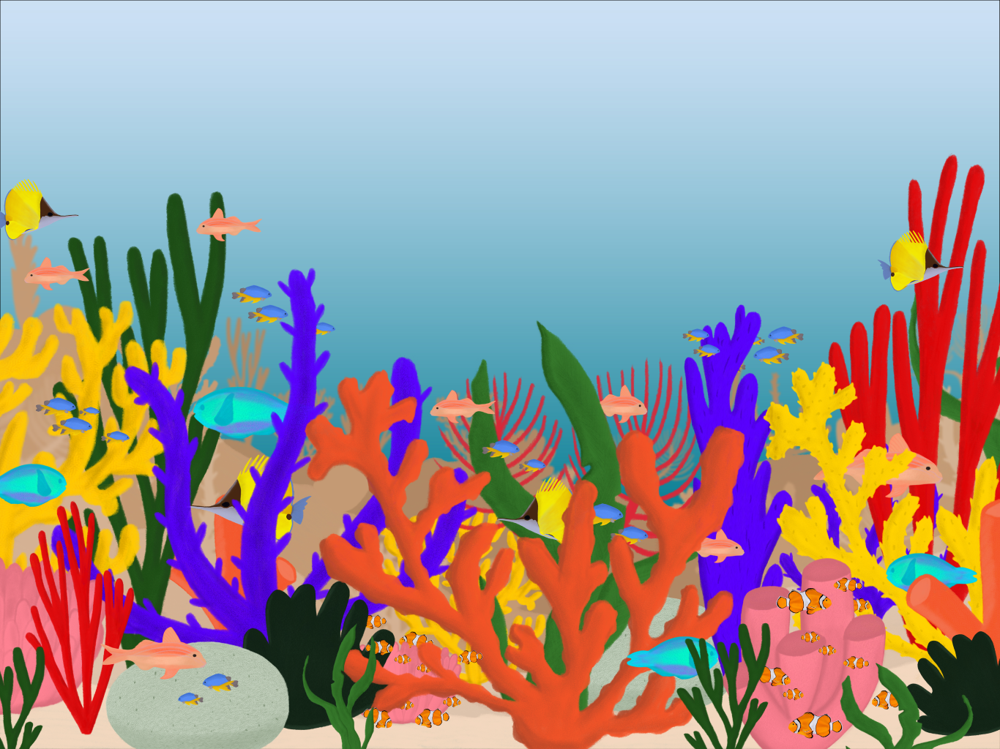
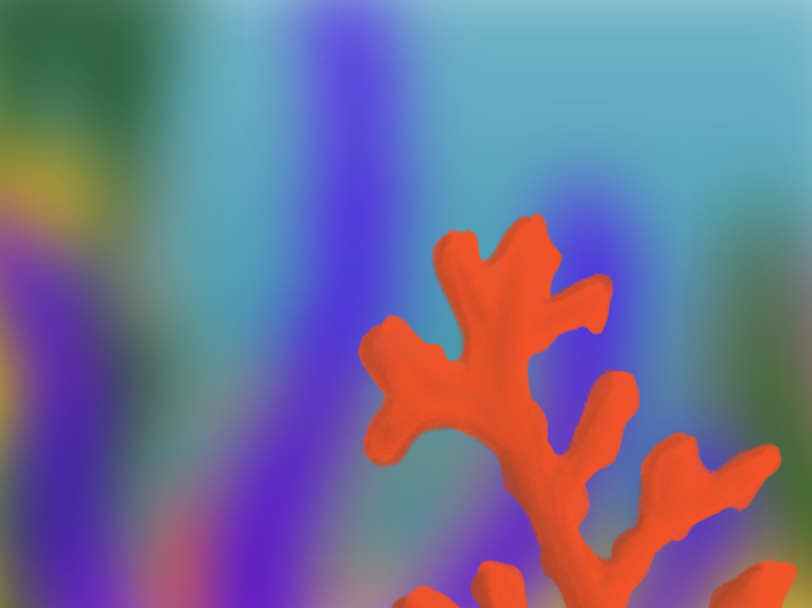

Geen plant, geen steen, maar een kolonie van piepkleine dieren: poliepen.

Een poliep is nauwelijks een paar millimeter groot. Een zacht, doorschijnend lichaampje, vastgehecht op een stevig kalkskelet dat hij zelf gebouwd heeft.


Elke poliep leeft samen met microscopisch kleine algen, zoöxanthellen, in zijn weefsels. Die vangen zonlicht op, zetten het om in energie en delen die met de poliep. In ruil krijgen ze bescherming en voedingsstoffen. Zo geven de algen het koraal ook zijn kleur.

Maar het leven in het rif draait niet alleen
om de samenwerking onder water.
om de samenwerking onder water.